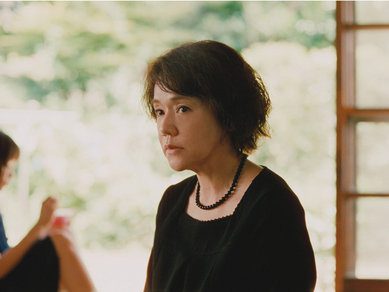

父が死んで、鎌倉の家に、腹違いの妹がやってきました―
Story
鎌倉の古い家で暮らす3姉妹のもとに、15年前に家を出て行った父親の訃報が届く。3人は山形での葬儀で、母親違いの妹と初対面する。彼女の母は、すでに他界していた。そして、姉妹は身寄りを失くした彼女に対し、鎌倉で一緒に暮らさないかと誘いかける。
海の見える街を舞台に、四姉妹が絆を紡いでいく。 深く心に響く、家族の物語。 両親を許せない長女と、自分を許せない四女。 それぞれの想いを抱えながら、四人が本当の家族になっていく一年間の物語。
湘南を舞台に、異母妹を迎えて4人となった姉妹の共同生活を...

海の見える街を舞台に、四姉妹が絆を紡いでいく。